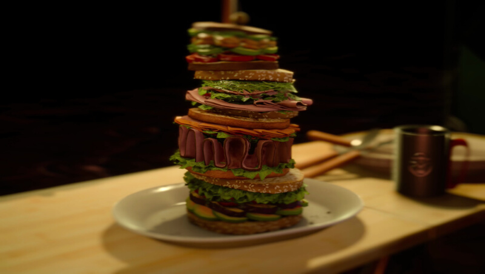

Stacked Ham Sandwich
Active cooking time: 1 hour | Total cooking time: 1 hour 30 mins | Serves 4

Is your stomach ready? This sandwich from Wiz Chocobo Post is large
enough to feed an entire family, quite literally.
Ingredients
- 1 eggplant, sliced
- 1 cup soy sauce (240mL)
- 1⁄3 cup mirin, i.e. Japanese rice wine (80mL)
- 2 tsp rice vinegar (10mL)
- 1⁄4 cup sugar (50g) + 1 tbsp sugar (12.5g)
- 1 tsp garlic powder (3g)
- 1⁄2 tsp ginger powder (1g)
- 10-15 pieces of shrimp
- salt
- pepper
- 1tbsp butter (1g)
- 1 roast pepper
- 1 avocado, sliced
- 1 tomato, sliced
- handful of sprouts
- lettuce
- 1⁄4 lb ham (115g)
- 1⁄8 lb turkey (60g)
- 3 slices of prosciutto
- 4 slices of salami
- 4 slices of cheddar cheese
- Japanese mayo (can substitute with regular mayo)
- balsamic vinegar
- 4 slices of white bread
- 4 slices of multigrain bread
- bamboo skewer (recommended)
- 1 green olive
How to
- In a ziplock bag combine eggplant, 1⁄2 cup soy sauce (120mL),
mirin, rice vinegar, 1⁄4 cup sugar (60mL), garlic powder, and ginger
powder. Let it marinate for 30 minutes. Place a grill pan over
medium-high heat. Cook the eggplant until each side has crisped
up, about 4-6 minutes per side. Set aside.
- Meanwhile, in a bowl combine 1⁄2 cup soy sauce (120mL), 1 tbsp
sugar (12.5g), salt, and pepper. Toss the shrimp in and marinate for
30 minutes. Heat a pan over medium-high heat with 1 tbsp butter.
Cook the shrimp until it turns pink, 2-3 minutes. Set aside.
- It is time to work on building the four different sandwich layers. To
make the bottom layer use 2 slices of multigrain bread. Add 1⁄2
avocado, the eggplant and roasted red pepper. Top with balsamic
vinegar and lettuce.
- For the second sandwich, grab 2 slices of white bread. Add
Japanese mayo, lettuce, ham, and prosciutto. Add another piece of
lettuce and the cheddar cheese.
- The third sandwich uses 2 slices of multigrain bread. Add Japanese
mayo and the turkey. Top with lettuce, salami, and sprouts.
- For the last sandwich grab the last 2 slices of white bread. Add
Japanese mayo, tomato, and lettuce. Top with shrimp and 1⁄2
avocado.
- Setting up the sandwich can be a bit tricky. I would recommend
using bamboo sticks to have each of the sandwiches piled on one
another. Top with olive.
Effect(s)
HP +200, EXP +50%
Source